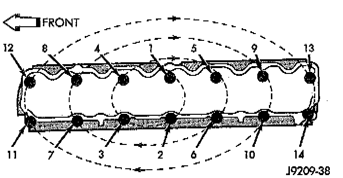
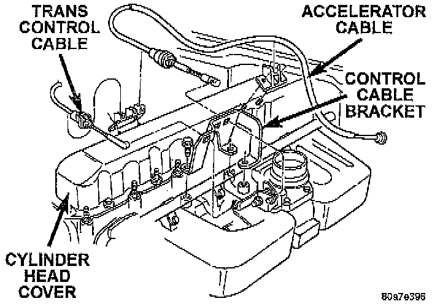

Removal and Installation

NOTES:
^ The cylinder head cover is isolated from the cylinder head via grommets and a reusable molded rubber gasket. The grommet and limiter are retained in the cylinder head cover.
^ There are two cylinder head bolts that have a pin to locate the cylinder head cover gasket, they are located at position 8 and 9.
REMOVAL
1. Disconnect negative cable from battery.
2. Disconnect the Crankcase Ventilation (CCV) vacuum hose from engine cylinder head cover.
3. Disconnect the fresh air inlet hose from the engine cylinder head cover.

4. Disconnect the accelerator, transmission, and speed (if equipped) control cables from the throttle body.
5. Remove the three bolts that fasten the control cable bracket to the intake manifold.
6. Remove control cables from cylinder head cover clip.
7. Position control cables and bracket away from cylinder head cover. Secure with tie straps.
8. Remove the engine cylinder head cover mounting bolts.
9. Remove the engine cylinder head cover and gasket.
INSTALLATION
1. If a replacement cover is installed, transfer the CCV valve grommet and oil filler cap from the original cover to the replacement cover.
2. Install cylinder head cover and gasket. Tighten the mounting bolts to 8.5 Nm (75 inch lbs.) torque.
3. Connect the CCV hoses.
4. Install control cables and bracket on intake manifold and tighten bolts to 8.7 Nm (77 inch lbs.) torque.
5. Connect control cables to throttle body linkage.
6. Snap control cables into cylinder head cover clip.
7. Connect negative cable to battery.